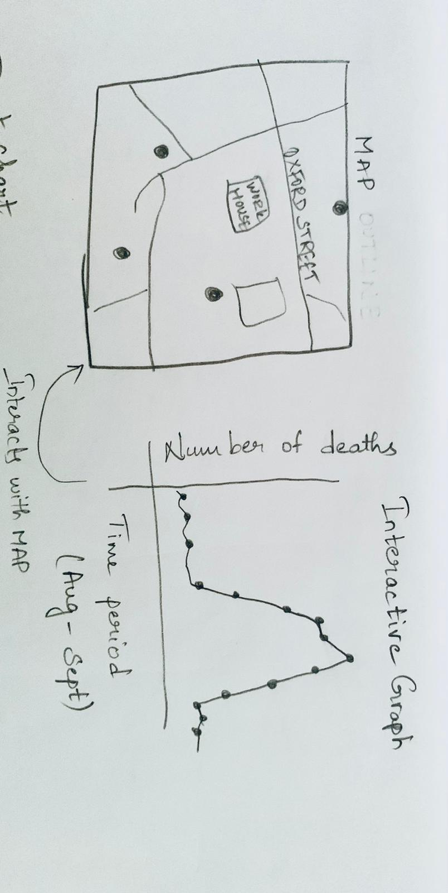
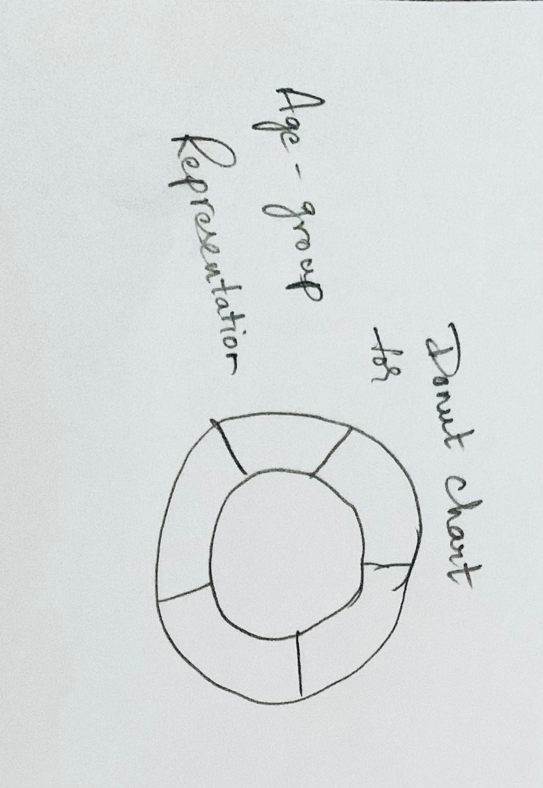
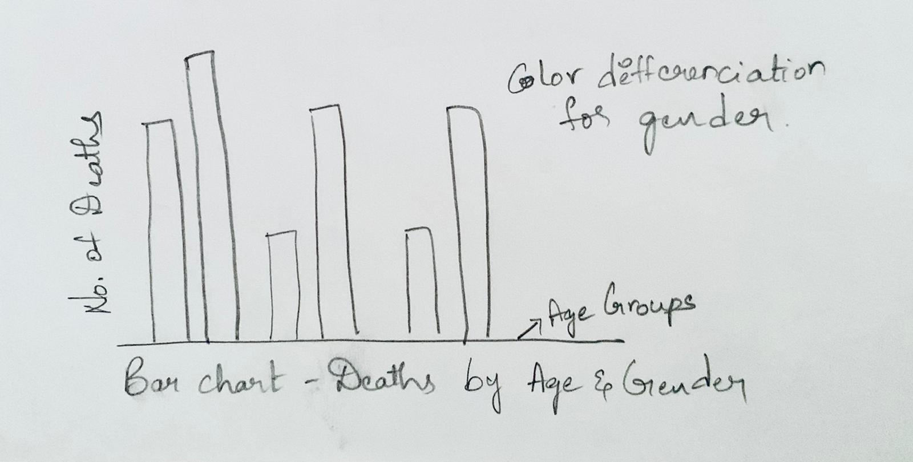

Introduction:
Hi, I am Yamini Sri Vandana Penamakuru and I have created this project for my course H517: "Visualization Design, Analysis, & Evaluation" at IUPUI, instructed by Dr. Khairi Reda. The objective of this project is to recreate Dr. John Snow's map using today's tools of trade (D3, to be specific). In addition to recreating the original map in an interactive version, I have to add additional charts to the side of the map, as well as interface elements to make the data more interactive. I was provided with several data files. These include a vector map of the area and the locations of the victims and a set of dates reflecting the number of victims relative to the beginning of the epidemic.
Here is the Wikipedia link to John Snow's Map: London's 1854 cholera epidemic
Design Process:
How did I go about designing the visualization?
● Firstly, I tried to understand the data that was given to me which includes streets.json, pumps.csv, deaths_age_sex.csv and deathdays.csv
● Next I started to plan and figure out how to handle the data given and planned on how to layout my designs.
● Since I am very new to D3JS, HTML, CSS, Java Script. I did a lot of research and watched a lot of training videos.
● I did spend a lot of time understanding how to process JSON and CSV files using d3js.
What are some of the initial designs / ideas I attempted in the beginning?
● Once I got a grip of how to handle the data given, I started to look for the sample visualizations that fit my needs at D3JS.ORG and D3 Graph Gallery
● With the help of these sample tutorials and documentations. I started my sketches on how and where the given data should be placed and came up with the below designs.
  
● After having my sketches sorted out. I first started to plot Streets on SVG and added some css to create some look and feel.
● Once my Map with Streets looked good, I started to plot pumps on the map by appending the pump coordinates to SVG.
● Then I went on with labeling Street names, highlighting Work House and Brewery.
● After that I went ahead with plotting all the deaths on the Map.
● Next big thing I wanted to do is to have a graph that shows deaths per day from Aug 19th to Sep 29th of 1854.
● Once the Graph came into shape, I wanted an interaction between Graph and Map.
● This interaction works when ever your mouse hovers on a point on Graph. You will see all the deaths from starting day (Aug-19-1854) until the selected day on the graph
● I also created a Reset button which resets the map to show all the deaths.
Additional Visualizations
Design Choices:
● Since this is a recreation of John Snow's Map using modern tools I wanted it to look simple, modern, clean and clear.
● I wanted to use all kinds of styles as much as possible to make this look and feel possible.
● I also wanted to use hover affects, shades, color codes, click effects.
● I added buttons for resetting the map and going to the Documentation and coming back to Visualization. These buttons have hover effect, click effect and color coding.
● Just by hovering on a particular day circle on the graph, it will show all the deaths till that date immediately on the map.
● This hovering will give color effects that will make you easily understand what changes are going on.
● I have selected all my colors after checking them with color blindness simulation tool to make sure they are ok. I used ColorBrewer for this purpose
● I initially used on click action for Graph to show the interaction but then I wanted it to be more easy for the user, so, I changed it to mousemove action.
Why did I use color to encode a particular variable?
● All the colors selected for this visualization are color-blind safe and the choices are made with the help of ColorBrewer>.
● I have used a dark purple to show pumps, Orange shade for Male and Red shade for female.
● Streets are Grey and Background is White to make it look simple and clear.
● I used White, Green and Black border for buttons to show hover affect and click effect.
● Selecting a particular day also has a color effect that shows the selection
● I used Light and dark green to show Work house and Brewery.
Why did I arrange my charts in a particular way?
● I have placed Map on the left and Graph on the right to make interactions easy and user friendly and clearly visible.
● I placed a button on the top to navigate to Documentation page.
● Documentation page contains detailed description, Youtube Demonstration Video and Additional Graphs and Visualizations.
● I placed another button on the Documentation page to return back to visualization.